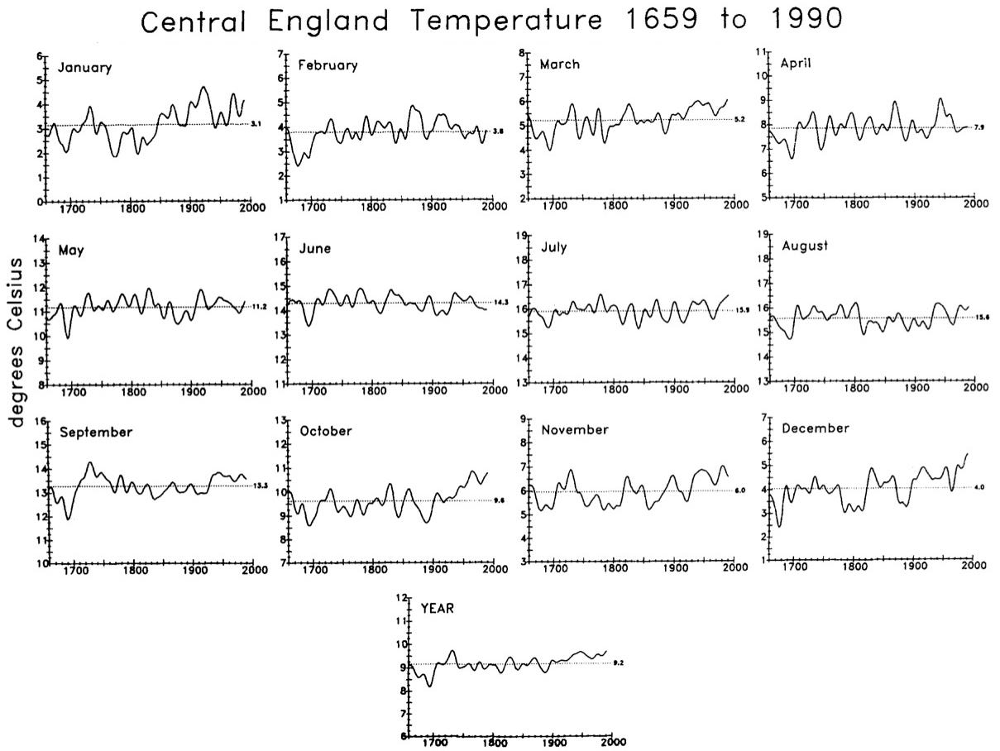
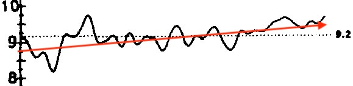
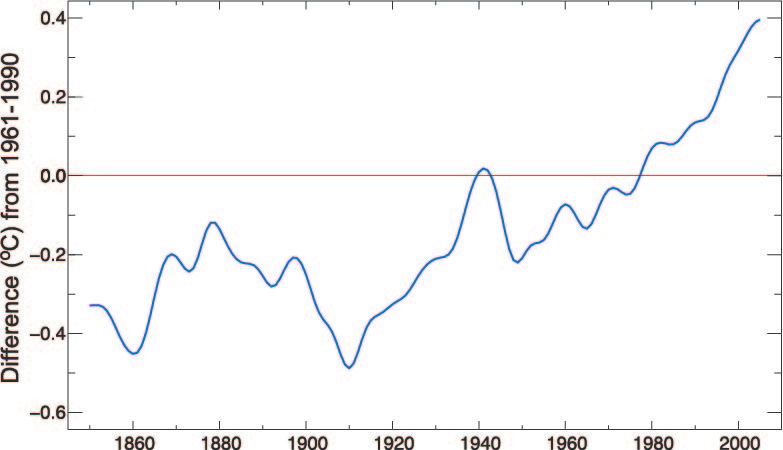
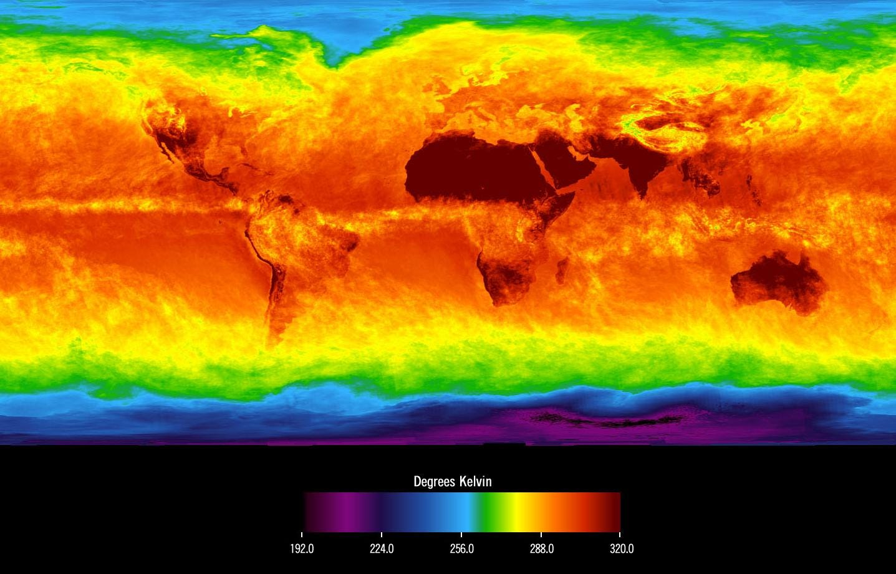

I’m Jonathan Burbaum, and this is Healing Earth with Technology: a weekly, Science-based, subscriber-supported serial. In this serial, I offer a peek behind the headlines of science, focusing (at least in the beginning) on climate change/global warming/decarbonization. I welcome comments, contributions, and discussions, particularly those that follow
Deming’s caveat
, “In God we trust. All others, bring data.” The subliminal objective is to open the scientific process to a broader audience so that readers can discover their own truth, not based on innuendo or
ad hominem
attributions but instead based on hard data and critical thought.
You can read Healing for free, and you can reach me directly by replying to this email.
If someone forwarded you this email, they’re asking you to sign up. You can do that by clicking
here
.
Today’s read: 7 minutes.
Welcome! I’m delighted you’ve decided to join in this journey.
To begin with, I’ve set an objective to establish
one
scientific fact per newsletter, along with data that supports it. I don’t intend to turn you, dear reader, into a climate scientist. I don’t even consider
myself
one. But, I hope that you’ll develop an appreciation for the process and use data and logic to come to your own conclusion.
At the core of climate change is a physical phenomenon called “global warming”, so I figure that’s as good a starting point as any.
There are two semantic parts to the set phrase, “global” and “warming”, and the meaning of each part is clear, but exactly
how
do we
know
that Earth’s temperature is going up? Well, scientists measure everything with a single-minded passion. Data is the lifeblood of science, and we all agree on what temperature is.
Apropos of this, an opening quote:
“When you can measure what you are speaking about and express it in numbers, you know something about it. When you
cannot
express it in numbers, your knowledge is of a meager and unsatisfactory kind. It may be the
beginning
of knowledge, but you have scarcely in your thoughts advanced to the stage of
Science
.”
—
William Thomson, 1st Baron Kelvin (19th-century physicist, developer of the absolute temperature scale)
Back to global warming:
Global
means to measure the entire planet, all of Earth, so that’s pretty self-explanatory. Temperature measurements, in contrast, are made locally. As we all know from experience, temperatures can vary dramatically with time, season, and location. Technologically, scientists have measured a standard temperature since the 17th Century, careful records have been kept for a long time (including by
Thomas Jefferson at Monticello
), and the entire planet’s temperature can be derived from local measurements. Our tools have gotten more accurate, but it’s still the same number.
But…what is the data to show that the Earth is getting warmer?
As you might imagine, there’s a LOT of it, and scientists with computers can go pretty wild with graphs and analyses. To publish, modern scientists are incentivized to draw compelling conclusions in papers written for an audience of their peers. So, casual readers get lost in impenetrable jargon and complexity. But, the question for the reader of this newsletter is a simple, yes-no question: “Based on the data, is the temperature of Earth going up or not?” We can get into the whys and consequences later, but this is pretty fundamental.
Let’s start with a local, complete set of data. Since 1659, the temperature in central England has been recorded. Every. Single. Day. These measurements began with a simple objective, to record numbers in hopes of being able to predict the weather using mathematics. In 17th-century England, this was a vital exercise—back then, agriculture was a life-or-death occupation, and starvation was a credible concern. For our modern purposes, though, this monotonous exercise created a comprehensive data set of unbiased readings. Below is a summary:

Figure 4 from Parker, DE, Legg, TP, and Folland, CK,
Int. J. Climatology
12
, pp. 317-342 (1992). Plotted are daily temperature readings averaged by both month and year. The horizontal axis is the year, and the vertical axis is the temperature in degrees Celsius. The central dotted line is the average.
It’s raw data, straight from the thermometer, and it shows a clear warming trend (over 350 years!). To make it clearer, here’s the “Year” graph expanded:

While the data makes it clear, it’s not particularly dramatic. It’s certainly not enough of a change to notice in a single lifetime. In fact, these measurements show that there have often been more significant changes (both warmer
and
cooler!) over a single human lifespan. And, the measurements are not “global”, so this
suggests
warming but doesn’t
prove
it on a global scale.
There are two possibilities: This warming trend is either localized or it is general. If it’s local, measurements in other areas will trend the other way so that the combination will level things out. If, on the other hand, the warming is global, measurements in other areas will show the same pattern over time. But, it can’t be both. So we will learn something from the data. Even if temperature measurements don’t go back to 1659, an average over many such sites will be definitive. If the average shows the same upward tendency, the temperature change (and its explanation)
must
be global, at least in part. If it flattens out, we’ll know it’s exclusively a local phenomenon.
When the same analysis is done at a global level, this is what is observed:

A plot of the HadSST2 dataset from Figure 3.4(b) of Trenberth, K.E., P.D. Jones, P. Ambenje, R. Bojariu, D. Easterling, A. Klein Tank, D. Parker, F. Rahimzadeh, J.A. Renwick, M. Rusticucci, B. Soden, and P. Zhai, 2007: Observations: Surface and Atmospheric Climate Change. In: Climate Change 2007: The Physical Science Basis. Contribution of Working Group I to the Fourth Assessment Report of the Intergovernmental Panel on Climate Change [Solomon, S., D.Qin, M. Manning, Z. Chen, M. Marquis, K.B. Averyt, M. Tignor and H.L. Miller (eds.)]. Cambridge University Press, Cambridge, United Kingdom and New York, NY, USA.
[Yes, that’s the full reference!]
Compared to the data from Central England, this covers only half as many years, so the total change is a bit smaller, but the trend is still there. [Because different places have different average temperatures, the vertical scale has been normalized. The average temperature from 1961 to 1990 is set as “zero” in each location] The change is small, only about one full degree (C) over 150 years. Still, the trend remains: The data collected in Central England indicates a global trend rather than a local one. Intriguingly, it looks less like a straight line and more like we’ve been getting warmer, faster, since about 1960—more about that next time.
In this context, the prospect of
measuring
the objective of the Paris Climate Accord (+1.5°C above “preindustrial” levels by the year 2100) seems pretty sketchy. Current estimates indicate that
we’re already 80% (+1.2°C) of the way
through this budget, and the chart shows “natural” variations in the measurement of ±0.5°C (compare 1910 to 1940, for example). But, I digress…
Later newsletters will go into the causes and effects of these changes. Here, the data speaks for itself: Our Earth is just a little bit warmer than it was 100 years ago, based on careful, direct measurements of temperature. If you believe differently, that’s certainly your prerogative, but the data is most definitely stacked against you.
To adherents of folksy armchair scientists like
Senator Jim Inhofe
(R-OK), please direct your attention to the “global” part rather than on the “warming” part—the effect is subtle. It has required scientists to look carefully at measurements over the
entire
Earth. As such, it’s not something that anyone would sense on their own—it’s only been detected because of careful scientific measurements over several lifetimes. If such a small temperature difference sounds trivial, consider that it’s the difference between driving easily on a wet road and fishtailing on black ice or between being healthy and running a fever. And, the trend is upward.
A
lagniappe
: The technologies we use to measure temperature have improved in extraordinary ways. [If you want to go down that rabbit hole of history, the go-to Wikipedia page is
here
.] The latest advance is our ability to measure the air temperature (among many other properties) in
three
dimensions by satellite thanks to
NASA’s AIRS mission
. This space-based thermometer now allows the construction of complete maps of surface temperature like this one:

Surface temperatures of Earth in April 2003, image is from
NASA’s AIRS data
. For reference, the color scale is in degrees Kelvin, where 192K is -114°F and 320K is +116°F. The melting point of ice is 273K, a very narrow band in yellow-green.
Pretty cool (and hot) image, eh? Data can be beautiful too! For even more, check out the
time-lapse
of the January to March 2019 polar vortex measured by AIRS, showing the air temperature at 18,000 ft above sea level.
So, you’ve gotten to the end. You should subscribe if you haven’t already. Please pass it on!